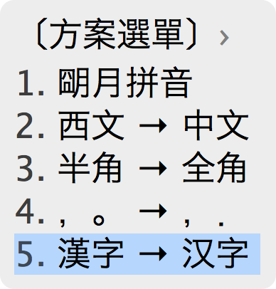
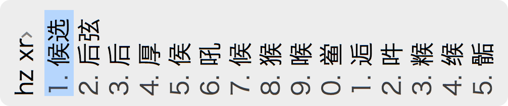

安装及配置 Mac 上的 Rime 输入法——鼠鬚管 (Squirrel)
奉送原甫侍讀出守永興
嘉祐五年
歐陽修酌君以荊州魚枕之蕉
贈君以宣城鼠鬚之管
酒如長虹飲滄海
筆若駿馬馳平坂
受君尚少力方豪
嗟我久衰歡漸鮮
文章驚世知名早
意氣論交相得晩
魚枕蕉
一舉十分當覆盞
鼠鬚管
爲物雖微情不淺
新詩醉墨時一揮
別後寄我無辭遠
这首诗应该就是「鼠须管」的出处吧
奉上一张用「小鹤双拼·语句流」输入的效果，中英混输 + Emoji 表情哦
安装
就一条理由就可以使我弃用使用 N 多年的其它输入法
1. https://github.com/lotem/squirrel
Rime 官网：http://rime.im/
可以去官网下载或者使用 Homebrew Cask 来安装（截至到今天版本非最新）
brew cask install squirrel
刚安装好，拼音输入是繁体的，按组合键 Ctrl+` 呼出输入法方案选单（如下），切换为「汉字」就可以输入简体了

配置
自行查看《Rime 定製指南 | GitHub》
以下是我对官网说明书的一些摘录，加上我的一些修改，只限于对拼音输入的理解
如果你用的是小鹤双拼，可以直接看下文《详细配置「小鹤双拼·语句流」》，介绍的是「小鹤双拼·语句流」的配置。语句流和普通的输入方式在配置上只有一条配置语句的不同，如果不喜欢语句流这种方式，改成普通的也非常简单，下文有介绍。BTW, 现在我自己都不使用「语句流」这种方式了
数据文件位置
共享资料夹："/Library/Input Methods/Squirrel.app/Contents/SharedSupport/"
用户资料夹："~/Library/Rime/"
用户资料夹内的文件说明如下
- 〔全局设定〕 default.yaml
- 〔发行版设定〕 weasel.yaml
- 〔预设输入方案副本〕 <方案标识>.schema.yaml
- ※〔安装信息〕 installation.yaml
- ※〔用户状态信息〕 user.yaml
编译输入方案所产生的二进制文件：
- 〔Rime 棱镜〕 <方案标识>.prism.bin
- 〔Rime 固态词典〕 <词典名>.table.bin
- 〔Rime 反查词典〕 <词典名>.reverse.bin
记录用户写作习惯的文件：
- ※〔用户词典〕 <词典名>.userdb.kct
- ※〔用户词典快照〕 <词典名>.userdb.txt、<词典名>.userdb.kct.snapshot 见于同步文件夾
以及用户自己设定的：
- ※〔用户对全局设定的定制信息〕 default.custom.yaml
- ※〔用户对预设输入方案的定制信息〕 <方案标识>.custom.yaml
- ※〔用户自制输入方案〕及配套的词典源文件
注：以上标有「※ 号」和「粗体」的文件，包含用户资料，您在清理文件时要注意备份！
自定义配置
对全局的定制
新建文件 touch ~/Library/Rime/default.custom.yaml, 内容如下
# default.custom.yaml, 全局生效
# 添加小鹤双拼到方案选单
patch:
schema_list:
- schema: double_pinyin_flypy # 新增小鹤双拼
- schema: luna_pinyin
- schema: cangjie5
- schema: luna_pinyin_fluency
- schema: luna_pinyin_simp
- schema: luna_pinyin_tw
对输入方案的定制
比如定制小鹤双拼
新建文件 touch ~/Library/Rime/double_pinyin_flypy.custom.yaml
# double_pinyin_flypy.custom.yaml, 只对小鹤双拼生效
patch:
translator/preedit_format: {} # 输入双拼码的时候不转化为全拼码
配置好之后需要「重新部署」：切换到「鼠须管」输入法，点击右上角的的输入法图标，点击「重新部署」
之后就可以用小鹤双拼了
外观设定
# 适用于【鼠须管】0.9.13+
# 位置：~/Library/Rime/squirrel.custom.yaml
# 用法：想要哪项生效，就删去该行行首的 "#" 字符，但注意保留用于缩进的空格
patch:
# us_keyboard_layout: true # 键盘选项：应用美式键盘布局
# 状态通知，适当，也可设为全开（always）全关（never）
# show_notifications_when: appropriate
#
# style/color_scheme: luna # 选择配色方案
# style/horizontal: true # 候选窗横向显示
# style/inline_preedit: false # 关闭内嵌编码，这样就可以显示首行的拼音
# style/corner_radius: 10 # 窗口圆角半径
# style/border_height: 0 # 窗口边界高度，大于圆角半径才有效果
# style/border_width: 0 # 窗口边界宽度，大于圆角半径才有效果
# style/line_spacing: 1 # 候选词的行间距
# style/spacing: 5 # 在非内嵌编码模式下，预编辑和候选词之间的间距
# style/font_face: "Hiragino Sans GB W3" # 字体名称
# style/font_point: 21 # 字号
# 注：预设的配色方案及代码（指定为 style/color_scheme ）
# 碧水 - aqua
# 青天 - azure
# 明月 - luna
# 墨池 - ink
# 孤寺 - lost_temple
# 暗堂 - dark_temple
# 星际我争霸 - starcraft
# 谷歌 - google
# 晒经石 - solarized_rock
# 简约白 - clean_white
一些快捷键
输入的时候删除一个音节
⌃ + BackSpace 或 ⇧ + BackSpace
从用户词典中删除误上屏的错词
Shift + Fn + Delete
Emacs 风格的编辑键
- ↑：
⌃ + p - ↓：
⌃ + n - ←：
⌃ + b - →：
⌃ + f - 上页：
⌥ + v - 下页：
⌃ + v - 句首：
⌃ + a - 句末：
⌃ + e - 回退：
⌃ + h - 刪除：
⌃ + d - 清空：
⌃ + g
有时候快捷键可能会用不了，那是因为其它应用首先获取了快捷键，这样输入法就不会影响你对其它软件的控制
定制标点符号
可以参考 default.yaml 和相应输入法方案的配置（比如 double_pinyin_flypy.schema.yaml）
比如在 default.yaml 中看到
punctuator:
half_shape:
"/": ["、", "/", "／", "÷"]
意思是当你输入 “/” 的时候，会出现上面列表中的候选
若你想让 “/键” 直接输出 “、"，可以做如下修改
# double_pinyin_flypy.custom.yaml
patch:
punctuator/full_shape:
"/": "、"
punctuator/half_shape:
"/": "、"
如果你的用的输入方案导入了 symbols.yaml, 你就可以参考 symbols.yaml 文件来修改了，里面还有各种特殊符号
活用标点创建自定义词组
这还有个用法，你可以将一个键或多个键专门用于输入自定义的词组比如
# double_pinyin_flypy.custom.yaml
patch:
punctuator/half_shape:
"+": "+_+"
当你输入 “+” 的时候就会变成 “+_+” 了
在特定程序里关闭中文输入
在一些程序里很少需要输入中文，于是让鼠须管在这些程序里默认不开启中文输入
要自定义 Mac 应用程序的初始转换状态，首先查看应用的 Info.plist 文件得到该应用的 Bundle Identifier, 通常是形如 com.apple.Xcode 的字符串
例如，要在 Xcode 里面默认关闭中文输入，又要在 Alfred 2 里面恢复开启中文输入，可如此设定：
# squirrel.custom.yaml
patch:
app_options/com.apple.Xcode:
ascii_mode: true
app_options/com.runningwithcrayons.Alfred-2: {}
修改之前先查看以下 squirrel.yaml 文件，默认设置了一些常用的软件
更改切换中西文的快捷键
# default.custom.yaml
#
# 可用的按键有 Caps_Lock, Shift_L, Shift_R, Control_L, control_R
# Mac 系统上的鼠须管不能区分左、右，因此只有对 Shift_L, Control_L 的设定起作用
#
# 已输入编码时按切换键，可以进一步设定输入法中西文切换的形式
# 可选的临时切换策略有三：
# inline_ascii 在输入法的临时西文编辑区内输入字母、数字、符号、空格等，回车上屏后自动复位到中文
# commit_text 已输入的候选文字上屏并切换至西文输入模式
# commit_code 已输入的编码字符上屏并切换至西文输入模式
# 设为 noop, 屏蔽该切换键
#
# 如果要把Caps Lock 设为只改变字母的大小写而不做中西文切换，可将 Caps_Lock 对应的切换方式设为 noop
# 如果要以Caps Lock 切换到西文模式，默认输出小写字母，请置 ascii_composer/good_old_caps_lock: false
# 如果要以Caps Lock 切换到西文模式，默认输出大写字母，请置 ascii_composer/good_old_caps_lock: true
patch:
ascii_composer/good_old_caps_lock: true
ascii_composer/switch_key:
Caps_Lock: noop
Shift_L: commit_code
Shift_R: noop
Control_L: noop
Control_R: noop
以方括号 “[” 和 “]” 来换页
# default.custom.yaml
patch:
key_binder/bindings:
- when: paging
accept: bracketleft
send: Page_Up
- when: has_menu
accept: bracketright
send: Page_Down
定制每页候选数
# default.custom.yaml
patch:
menu/page_size: 5
来张 15 个候选的靓照

关闭用户词典和字频调整
# double_pinyin_flypy.custom.yaml
patch:
translator/enable_user_dict: false
关于调试
使用过程中难免会出现莫名其妙的问题，这个时候我们可以通过如下方法来查找错误
官方文档关于调试的章节 https://github.com/rime/home/wiki/RimeWithSchemata#關於調試
词库管理及用户资料的同步
用户词库的导入导出
目前鼠须管没有图形工具，使用命令行工具也是一样的
先做一些准备工作
-
新建文件
touch ~/Library/Rime/rime_dict_manager, 输入如下内容#!/bin/bash # # put this script in ~/Library/Rime, list existing user dictionaries: # ./rime_dict_manager --list # see other supported options: # ./rime_dict_manager DYLD_LIBRARY_PATH="/Library/Input Methods/Squirrel.app/Contents/Frameworks" "/Library/Input Methods/Squirrel.app/Contents/MacOS/rime_dict_manager" $@ -
然后添加可执行权限
chmod +x ~/Library/Rime/rime_dict_manager -
进入用户资料夹 (~/Library/Rime/), 执行相关操作
导入导出
-
查看用户词典列表
./rime_dict_manager -l -
先关闭输入法，释放以独占方式打开的词典文件
killall Squirrel -
将词库导入
./rime_dict_manager -i dict_name import.txt -
将词库导出
./rime_dict_manager -e dict_name export.txt
导入扩充词库
应该导入到系统词库，方法：固态词典引用多份码表文件
详细解释请看《〔新手推荐敎程〕关于导入词库及「深蓝词库转换」的正确操作方法 | rime 吧》
感谢词库制作者，下载词库点击《朙月拼音擴充詞庫 | Rime 翰林院》
导入方法（以「小鹤双拼·语句流」输入方案，extend_dictionaries20131121.rar 词库文件为例）：
-
修改定制文件
# double_pinyin_flypy_fluency.custom.yaml patch: translator/dictionary: luna_pinyin.extended -
将
luna_pinyin.hanyu.dict.yaml
luna_pinyin.extended.dict.yaml
luna_pinyin.poetry.dict.yaml
这三个词库文件移动到用户资料夹 “~/Library/Rime/” -
重新部署
-
注意，在「朙月拼音擴充詞庫」的这个版本中 extend_dictionaries20140909.zip, 他们增加了 luna_pinyin.cn_en 这个词库，但是同时他们在 luna_pinyin.extended.dict.yaml 这个文件写明了双拼不支持 luna_pinyin.cn_en 这个词库，如果你使用的是双拼，记得在 luna_pinyin.extended.dict.yaml 文件中将 luna_pinyin.cn_en 这个去掉
说的更明白一点就是，将 luna_pinyin.extended.dict.yaml 文件中的：
import_tables: - luna_pinyin - luna_pinyin.hanyu - luna_pinyin.poetry - luna_pinyin.cn_en改写成（去掉 luna_pinyin.cn_en）
import_tables: - luna_pinyin - luna_pinyin.hanyu - luna_pinyin.poetry
同步用户资料
使用 Dropbox 同步
编辑 installation.yaml 文件，添加一行：
sync_dir: '/Users/username/Dropbox/sync/Rime'
在不同电脑间进行同步
同步机制可以理解为这样的：
比如两者的同步文件夹都为 Rime（通过 Dropbox 等同步工具同步），在这之下就会生成两个以 installation_id 命名的文件夹，分别存放了两者的配置，所以两者之间的配置是不会共享的，自己同步自己的。但是用户词典是相互同步的（显然需要这个功能）
举个同步的例子（我在 Mac 已经进行了相关的配置，也拥有了相当的词库，我又在一台 Windows 上安装了小狼毫输入法，想使用 Mac 下相同的配置和词库）：
-
在 Windows 上安装小狼毫输入法
-
使用 Dropbox 等工具将鼠须管的同步文件夹同步到这台 Windows 上（例如为 Y:\Rime）
-
打开小狼毫的用户文件夹（开始菜单中可直接打开），修改 installation.yaml 文件，添加一行
sync_dir: Y:\Rime注意不要在路径两边加上双引号，不然无法同步
-
在开始菜单中点击小狼毫的用户资料同步
-
将鼠须管的配置文件复制到小狼毫的用户资料文件夹中，例如如下的「小鹤双拼·语句流」的方案，需要复制的配置文件有：
- double_pinyin_flypy_fluency.schema.yaml
- chinese_contain_english.schema.yaml
- chinese_contain_english.dict.yaml
- default.custom.yaml
-
重新部署小狼毫
详细配置「小鹤双拼·语句流」
2014-06-09 更新：
用了一段时间的语句流，和普通的方式比起来繁琐了一点，但是又没什么明显的优点，至少在 Rime 上是这样子的，我理想中还是觉得语句流要好，但是现在 Rime 还不够强大。
我理想中的语句流输入方式：你输入一系列按键，然后他会自动生成一段话，有时候你会输错，有时候里面夹杂着英文。如果这个输入法非常聪明，他就会正确理解你的意思，就好像你让秘书做事一样，不用告诉他第一步是什么，第二步是什么，他理解你的意思，并且完美地做好。
但是 Rime 做不到秘书这样的水平，你得告诉 Rime 这是中文，这是英文，而且也不能输错。
普通的输入方式：空格上屏，回车输入码直接上屏。相比语句流简单了一点。所以我现在自己也不用语句流了。
虽然当初我写的是语句流的配置，但是没什么关系，他们只有一行配置的不同。详情见《创建「小鹤双拼·语句流」输入方案》 配置文件中的第 40 行。
首先简单介绍一下语句流
玩法是：空格断词，回车和标点上屏
令输入码直接上屏：输入的时候切换为西文编码，然后回车上屏
对用户来说优点很明显，整句输入真的很爽，中英文混输很方便
对输入法来说，它能知道你输入的更多信息，使你输入更爽快
效果图在最上面，点这里乘电梯
创建「小鹤双拼·语句流」输入方案
在「小鹤双拼」的基础上进行修改
cp /Library/Input\ Methods/Squirrel.app/Contents/SharedSupport/double_pinyin_flypy.schema.yaml ~/Library/Rime/double_pinyin_flypy_fluency.schema.yaml
不同的地方基本都有说明
# double_pinyin_flypy_fluency.schema.yaml
# Rime schema
# encoding: utf-8
schema:
schema_id: double_pinyin_flypy_fluency # 更改方案标识
name: 小鶴雙拼·語句流
version: "fluency_0.17"
author:
- double pinyin layout by 鶴
- Rime schema by 佛振 <chen.sst@gmail.com>
description: |
「朙月拼音＋小鶴雙拼」語句流方案。
以空格分詞、標點或回車上屏。
dependencies:
- stroke # 带别名的 translator 所引用的字典部署时不会自动编译
- chinese_contain_english # 只有 translator/dictionary: 指定的字典会被编译
- emoji # 因此需要设置输入方案的依赖关系，保证词典可用
switches:
- name: ascii_mode
reset: 0
states: [ 中文, 西文 ]
- name: full_shape
states: [ 半角, 全角 ]
- name: ascii_punct
states: [ ，。, ，． ]
- name: simplification
states: [ 漢字, 汉字 ]
engine:
processors:
- ascii_composer
- recognizer
- key_binder
- speller
- punctuator
- selector
- navigator
- fluency_editor # 语句流必需，编辑器，处理空格、回车上屏、回退键等
# 如果你不喜欢语句流，可将其改为 express_editor
segmentors:
- ascii_segmentor
- matcher
- abc_segmentor
- punct_segmentor
- fallback_segmentor
translators:
- punct_translator
- reverse_lookup_translator
- script_translator
- table_translator@chinese_contain_english # 添加码表式副翻译器
- table_translator@custom_phrase # 同上
- table_translator@emoji # 同上
filters:
- simplifier
- uniquifier
speller:
alphabet: zyxwvutsrqponmlkjihgfedcba
delimiter: " '"
algebra:
- erase/^xx$/
- derive/^([jqxy])u$/$1v/
- derive/^([aoe])([ioun])$/$1$1$2/
- xform/^([aoe])(ng)?$/$1$1$2/
- xform/iu$/Q/
- xform/(.)ei$/$1W/
- xform/uan$/R/
- xform/[uv]e$/T/
- xform/un$/Y/
- xform/^sh/U/
- xform/^ch/I/
- xform/^zh/V/
- xform/uo$/O/
- xform/ie$/P/
- xform/i?ong$/S/
- xform/ing$|uai$/K/
- xform/(.)ai$/$1D/
- xform/(.)en$/$1F/
- xform/(.)eng$/$1G/
- xform/[iu]ang$/L/
- xform/(.)ang$/$1H/
- xform/ian$/M/
- xform/(.)an$/$1J/
- xform/(.)ou$/$1Z/
- xform/[iu]a$/X/
- xform/iao$/N/
- xform/(.)ao$/$1C/
- xform/ui$/V/
- xform/in$/B/
- xlit/QWRTYUIOPSDFGHJKLZXCVBNM/qwrtyuiopsdfghjklzxcvbnm/
#- abbrev/^(.).+$/$1/
translator:
dictionary: luna_pinyin
prism: double_pinyin_flypy_fluency # 由拼写运算规则产生的拼写映射表的名称
# 去掉了 preedit_format:, 作用是输入双拼码的时候不转化为全拼码
# 中英文混输的时候，可补全英文，并在英文两边加上半角空格
# 例如：我爱 Rime 输入法
chinese_contain_english:
dictionary: chinese_contain_english
# 用户自定义词典，可直接编辑文件 "~/Library/Rime/custom_phrase.txt"
# db_class: stabledb 指定词典格式为文本码表格式（文字<TAB>编码<TAB>权重（可选））
custom_phrase:
dictionary: ""
user_dict: custom_phrase
db_class: stabledb
enable_completion: false
enable_sentence: false
initial_quality: 1
# 可直接输入 Emoji 表情编码来输入表情
emoji:
dictionary: emoji
reverse_lookup:
dictionary: stroke
enable_completion: true
prefix: "`"
suffix: "'"
tips: 〔筆畫〕
preedit_format:
- xlit/hspnz/一丨丿丶乙/
comment_format:
- xform/([nl])v/$1ü/
punctuator:
import_preset: symbols # 导入 symbols.yaml, 用于输入特殊符号
key_binder:
import_preset: default
recognizer:
import_preset: default
patterns:
number: "^[-+]?[0-9][.:0-9]*[%]?$"
# 配合特殊符号的输入
punct: "^/[0-9]*[a-z]*$"
reverse_lookup: "`[a-z]*'?$"
创建 chinese_contain_english 输入方案
因「小鹤双拼·语句流」输入方案依赖 “chinese_contain_english” 输入方案，如果不创建的话 chinese_contain_english 词典无法被编译
创建简单版本即可 touch ~/Library/Rime/chinese_contain_english.schema.yaml, 内容如下：
# chinese_contain_english.schema.yaml
# Rime schema
# encoding: utf-8
schema:
schema_id: chinese_contain_english
name: 英文
version: "0.1"
description:
为了配合「小鹤双拼·语句流」输入方案
engine:
processors:
- speller # 把字母追加到编码串
- selector # 选字、换页
- navigator # 移动插入点
- express_editor # 空格确认当前输入、其他字符直接上屏
segmentors:
- abc_segmentor # 标记输入码的类型
translators:
- echo_translator # 没有候选项时，创建一个与编码串一个模样的候选项
- table_translator # 码表式转换
translator:
dictionary: chinese_contain_english # 设定 table_translator 使用的词典名
创建 chinese_contain_english 词典
touch ~/Library/Rime/chinese_contain_english.dict.yaml
内容如下：
# chinese_contain_english.dict.yaml
# Rime dictionary
# encoding: utf-8
#
# 中英文混输的时候有用
---
name: chinese_contain_english
version: "0.1"
sort: by_weight
use_preset_vocabulary: false
...
Rime rime
Android android
Apple apple
Mac mac
Windows windows
# ... 自己扩展
需要注意的是： Rime rime 之间要有 tab，其它的类似，词典格式是如此
完整的文件内容请看：https://gist.github.com/lifenod/931e306e2ae8bd32b169
添加「小鹤双拼·语句流」输入方案以及对全局的定制
首先创建对全局的用户定制文件
touch ~/Library/Rime/default.custom.yaml
然后编辑该文件
# default.custom.yaml
# Rime default settings
# encoding: utf-8
patch:
schema_list:
- schema: double_pinyin_flypy_fluency # 新增「小鶴雙拼·語句流」
- schema: luna_pinyin
- schema: cangjie5
- schema: luna_pinyin_fluency
- schema: luna_pinyin_simp
- schema: luna_pinyin_tw
key_binder/bindings: # 以方括号换页
- when: paging
accept: bracketleft
send: Page_Up
- when: has_menu
accept: bracketright
send: Page_Down
ascii_composer/good_old_caps_lock: true # 中西文切换快捷键
ascii_composer/switch_key:
Caps_Lock: noop
Shift_L: inline_ascii
Shift_R: noop
Control_L: noop
Control_R: noop
外观设定
见上文《外观设定》
导入扩充词库
见上文《导入扩充词库》
同步用户资料
见上文《同步用户资料》
iOS 上的双拼输入法
在 iOS 9 系统下，我使用的是「SPi 双拼输入法 for iPhone」，一款不需要「完全访问」的输入法，界面近乎原生，简单快速，双拼功能也足够使用
官网：http://spiim.com/
GitHub 主页：https://github.com/guoc/spi, 这款输入法是开源的
参考：
Rime 心情集 | GitHub
說明書 | GitHub
Rime 定製指南 | GitHub
Rime 輸入方案設計書 | GitHub
雪齋的文檔 | GitHub
预备发布一个新版本【小狼毫】0.9.21 | rime 吧
〔新手推荐敎程〕关于导入词库及「深蓝词库转换」的正确操作方法 | rime 吧